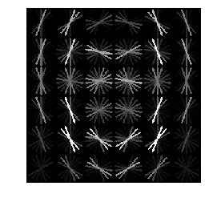
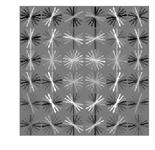
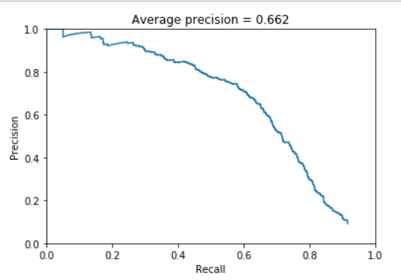
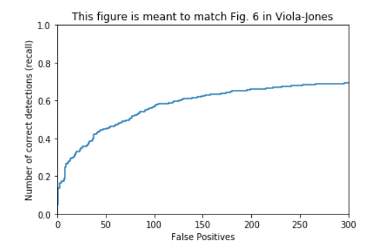
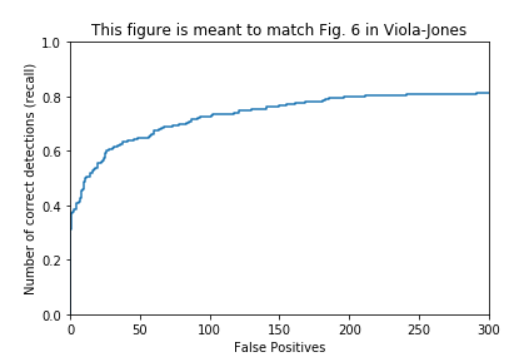
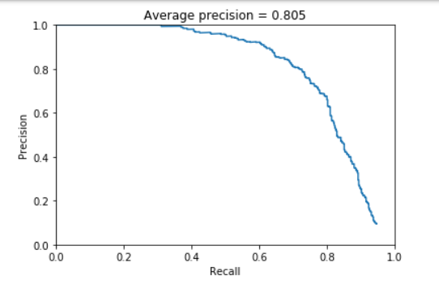
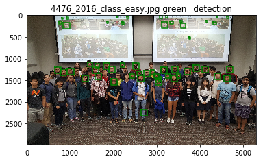
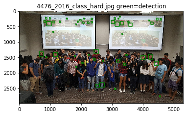
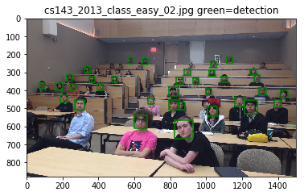
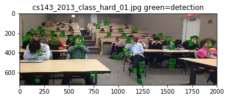

In this project the main concern was to build an object classifier that could be applied to an image set and find subsections of that image that belong to that object’s classification. The focus was on face detection, a widely useful function used in all digital cameras today.
To begin, a set of features that could readily be associated as a face is necessary as when building a classifier positive training data is necessary. These features were generated by taking a histogram of gradients feature vector of a large set of small images with positive ground truth as faces and constant dimension. This set of vectors was flattened in two dimensions and then kept as an identifier to use in classifier training. Additionally, in order to train a classifier, it is necessary to obtain data that is readily identifiable as a non-face. To achieve this again a set of images that did not contain any faces was used, these however were not of constant dimensions and in most cases had far more HOG vectors. To rectify this a random HOG index was used and a window the same size of the positive features was extrapolated from that point. This was repeated several times for each image to ensure the number of negative features would be approximately a desired size.
|   |
Once the training features were generated a classifier could be built. For the sake of speed, a linear classifier was used to fit the data and this SVM was trained with the data labeling all the positive features as 1 and negative features as 0.
Linear Classifier
Once a classifier was built a detector could be constructed whose input would be a large set of images that contained faces, a window was utilized in a fashion to finding the negative features however instead of taking random features the window was slid around the HOG of the image and each feature was tested for confidence by the SVM, each feature that was above a certain threshold was saved and the most confident features were run through a non-maximal suppression algorithm and compared to the ground truth of face locations in the image. This was repeated for multiple scales of the image as many of the images had faces that would not fit in the window size chosen. After testing several different parameters an average score of 80% was achieved while keeping runtime low. A large amount of false positives were found through out this image mostly due to the large number of scales being needed for each image.
|   |
In order to improve that classifier without adding an inordinate number of features instead hard negative features were sought to enhance the training data. Using the same process as before to find negative features except instead of adding all the features only those the current SVM identified as a false positive were kept. As this was done randomly the features were very likely to have never been seen before by the classifier and helped it to reduce its false positive rate. This helped the classifier a great deal when many random samples were mined, in some cases it allowed for a large correction from a poor classifier that did not train on enough negative features. However, as the number of negative features used in training the SVM increased the effect of the hard-negative mining became less and less noticeable.
|   |
Several parameters were used to create this face detector, each with moderate amounts of influence. The first parameter varied was the number of negative features, obviously the classifier ran more accurately when using a larger number of features however at 10,000 features the accuracy averaged above 98% with a false positive rate and false negative rate each less than 5%, when reduced to 1000,5000, 6000, 7000, 8000, 9000, the accuracy dropped considerably, However another important parameter that tied in very closely was the number of features to sample in mine hard negs, by increasing this number significantly the second SVM could be improved enough to compensate for a lower number of negative features, even as low as 1000. The downside to increasing this number was that the runtime of mine hard negs was directly correlated to the number of hard negatives it found so any time saved by reducing the number of sampled negative features only compounded runtime in hard mine negs. Keeping a high negative sample (10000) as well as a high hard negative sample (100000) allowed for a strong improvement with low average runtime. The default HOG window and cell size were kept as reducing them by a small factor led to too large of an increase in runtime, long enough that the process was simply terminated at about 15 minutes. When instantiating the linear SVM a C constant of 1e-4 (as recommended in the outline) was used, when this constant was dropped further the false positive rate rose to 15%,60%, and in one case 99%. When increased to above one accuracy dropped as well albeit not as drastically, similarly sized values tended to very similar accuracy scores so in the end the default was kept. Understandably the accuracy dropped off after increasing C as this constant determines the penalty of the error margin in the learner, but when the penalty is too small this allows for larger error margins leading to insanely high false positive rates. When sliding the window throughout the HOG vectors in the detector runtime was greatly minimized by first finding these vectors then sliding a window through them; runtime was so low that a step size of 1 could be used without severe penalty to runtime, since the smallest step size allowed for more windows to be evaluated and accuracy to be increase the lowest possible step size of 1 was used. The confidence threshold was also used to filter out windows whose features were very unlikely to be faces, a threshold of -0.5 was used as in our classifier we had far more training for negative features than positive and in fact many faces in these images returned low confidence scores that were less than zero, to avoid filtering out these faces a negative threshold was used however it was cut off at -0.5 as the number of features below this number was far higher than those above. To determine the set of scales needed to test on each image several numbers were used and all those kept allowed for at least one match in the image set to be made (those that offered no increase when combined with their nearest neighbor scale were also filtered out) the scales used were: [l*p,0.01,0.15,0.25,0.35,0.5,0.65,0.75,0.9] where l and p are the window size/ dimensions of the image ( this is to account for the image that contained a face that took up a large amount of image area). Once these were filtered only the features with the highest confidence were kept and run through non-maximal suppression, for several of the images there were different faces at different scales and by suppressing low confidence features at other scales accuracy dropped. Having such a high value for topk (250) did unfortunately result in many false positives. However, in the extra images cases this number could be reduced to still find a good number of faces while greatly reducing the false positive rate of the detector.
|     |